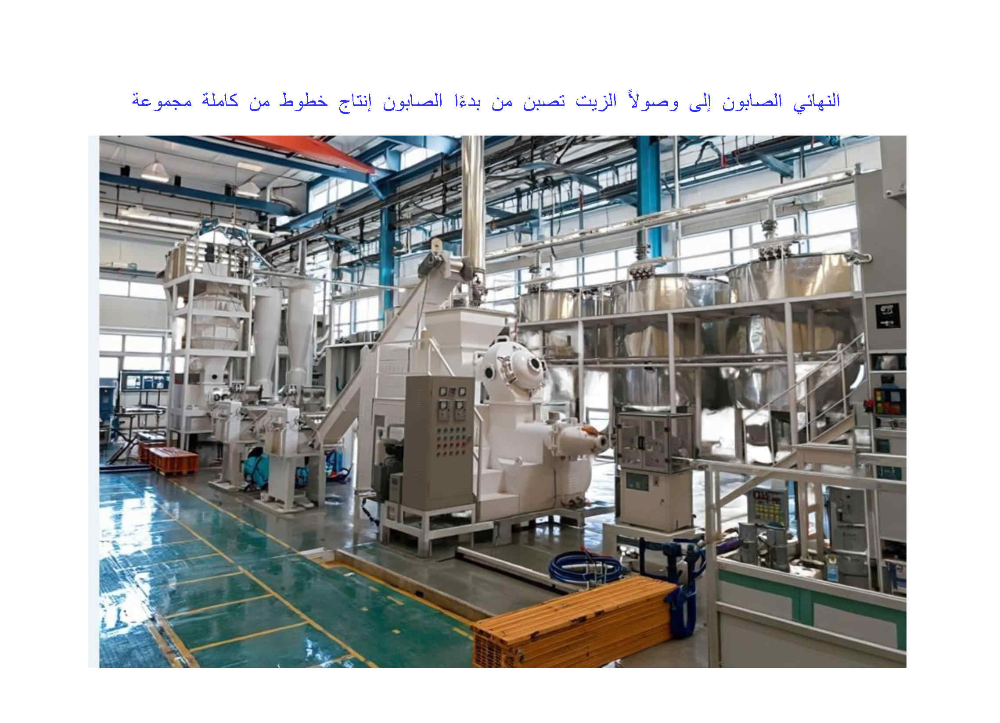
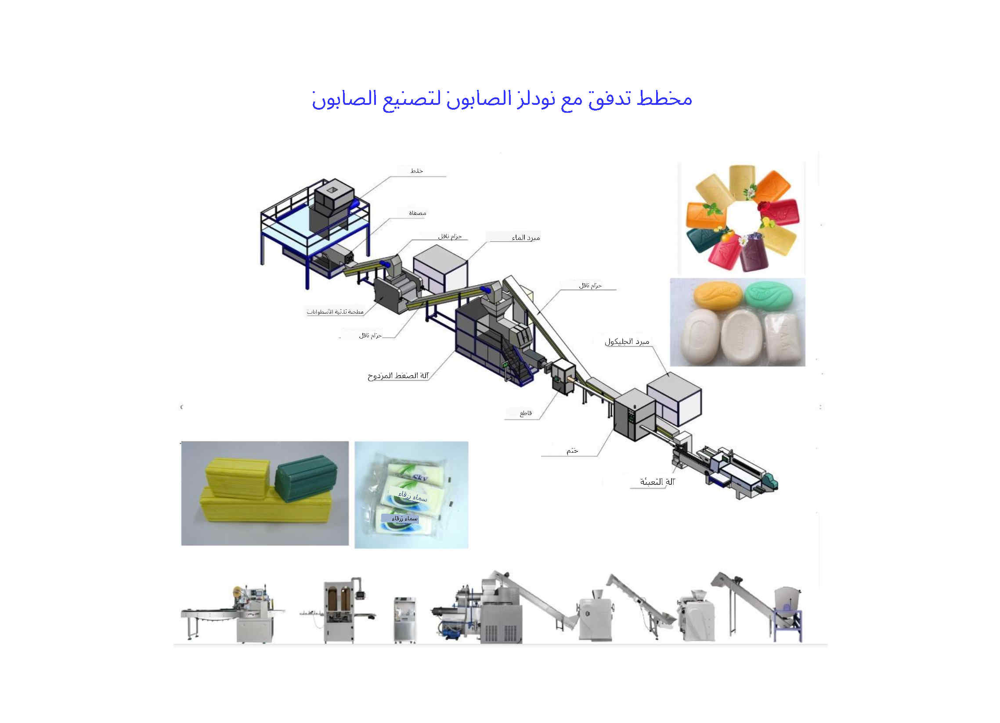
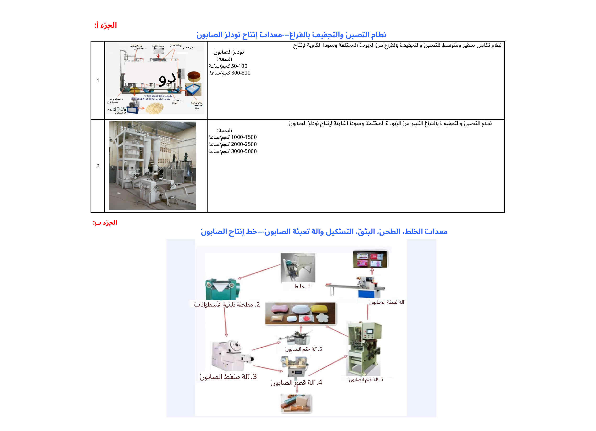
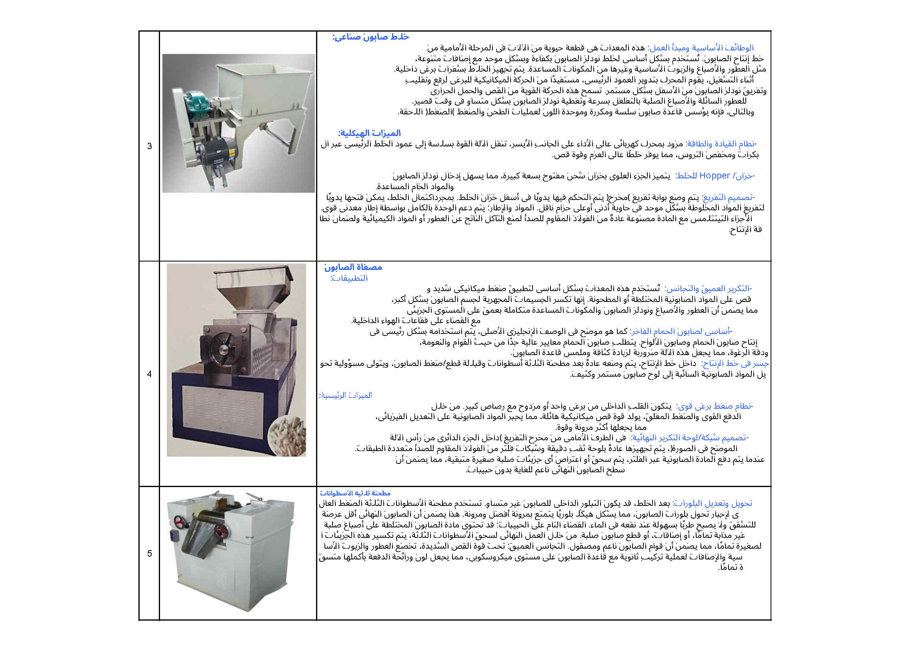
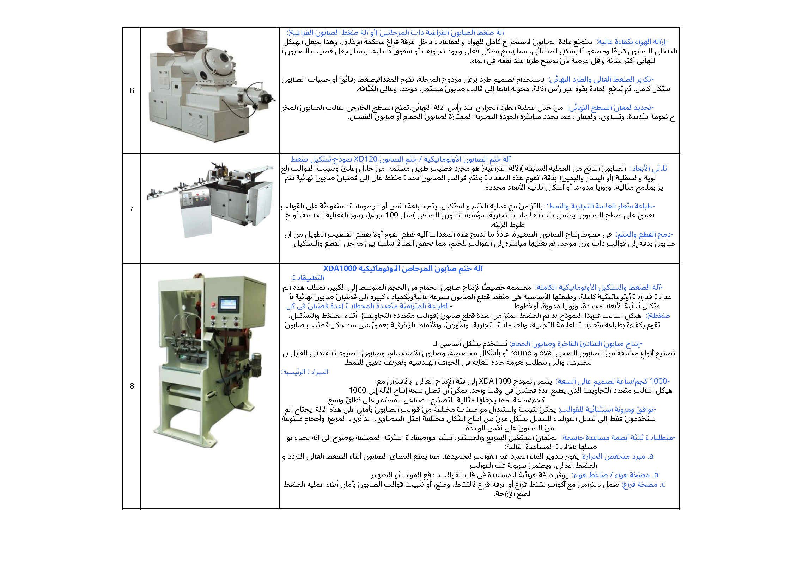
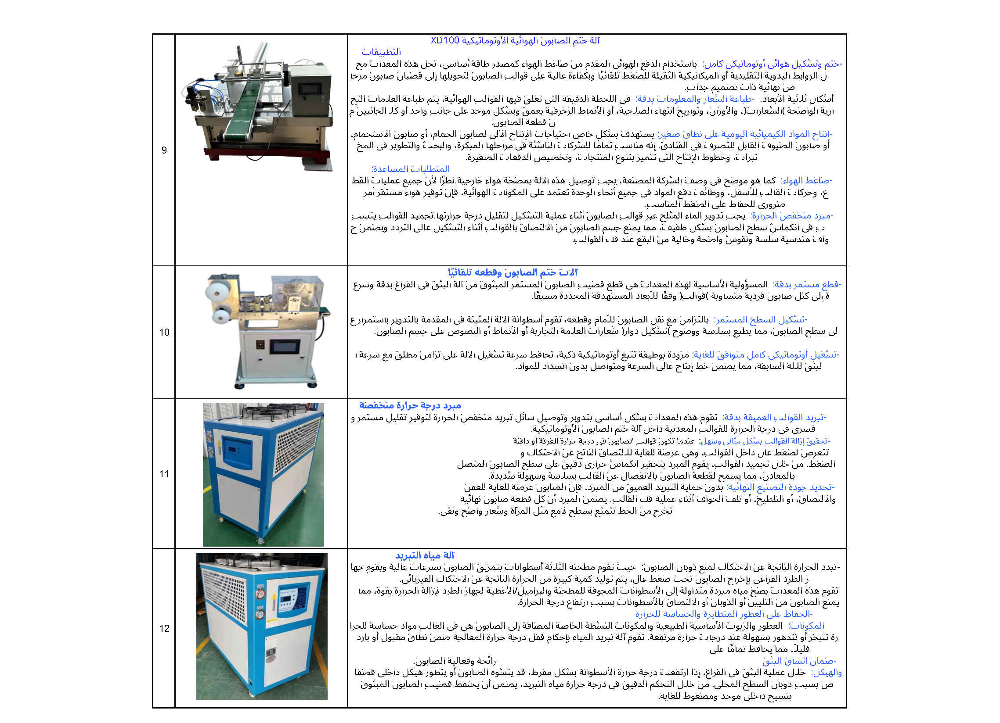
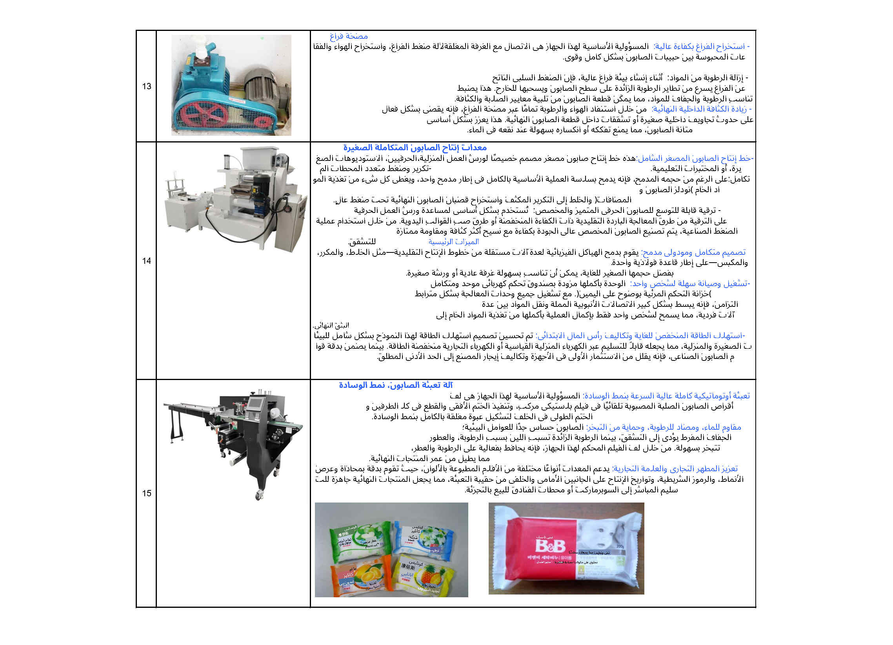
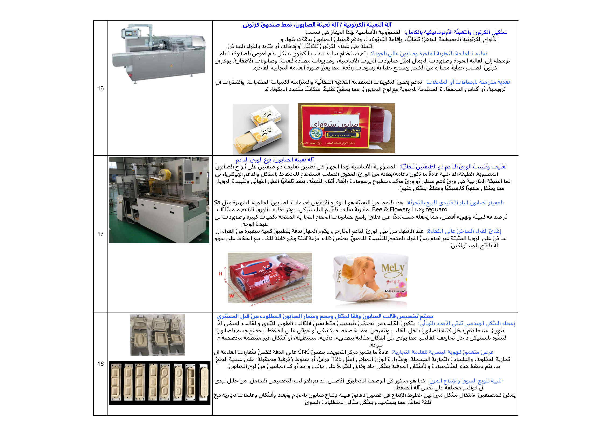
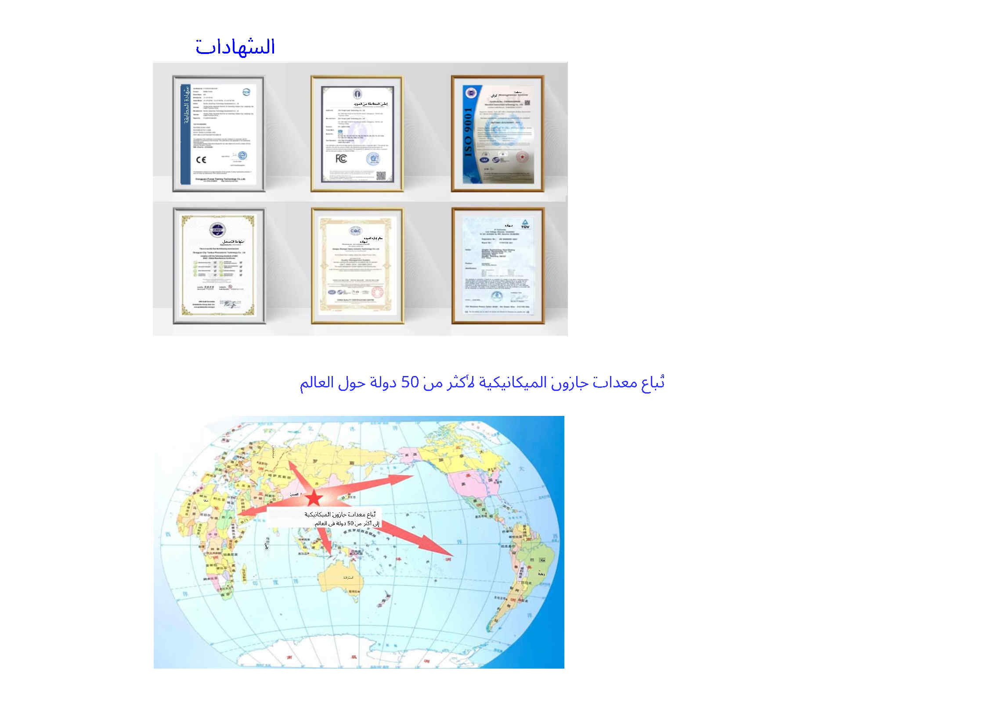
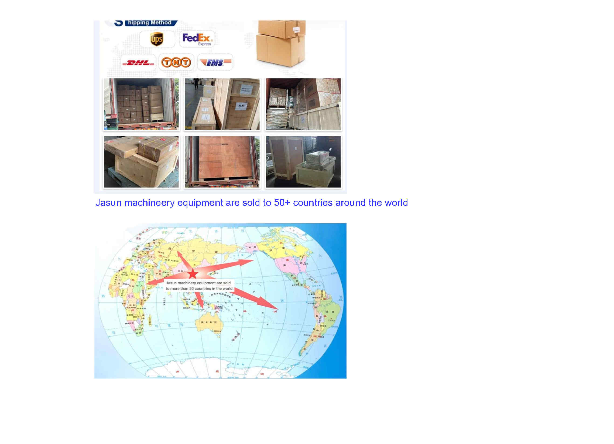

خبراء محترفون في آلات تصنيع الصابون
تأسست شركة Kaifeng Jasun Industry Co., Ltd. في عام 2005، وهي متخصصة في آلات تصنيع الصابون المهنية وخطوط الإنتاج الكاملة. مع أكثر من عقدين من الخبرة الصناعية، نحن ملتزمون بتزويد مصنعي الصابون العالميين بآلات معالجة الصابون عالية الأداء بدءًا من التصبين وحتى التغليف النهائي للصابون. تم تصدير أجهزتنا إلى أكثر من 50 دولة ومنطقة، بما في ذلك الدول Mتقدمة مثل الولايات المتحدة الأمريكية.
تنقسم العملية برمتها إلى خطوتين رئيسيتين.
الخطوة الأولى (الجزء أ) هي عملية التصبين والتجفيف لإنتاج نودلز الصابون. وهي عبارة عن تفاعل تصبين بين الزيوت النباتية/الدهون الحيوانية والصودا الكاوية لتكوين قاعدة الصابون. ثم تُعالج قاعدة الصابون هذه من خلال نظام تجفيف بالتفريغ الهوائي وجهاز تحبيب، حيث يتم بثقها إلى نودلز الصابون.
الخطوة الثانية (الجزء ب) هي تحويل نودلز الصابون إلى صابون جاهز. توضع نودلز الصابون في خلاط الصابون، حيث تُخلط مع العطر والصبغة. ثم يُغذى الخليط إلى جهاز تكرير. والهدف الأساسي من ذلك هو مزج وتجانس وطحن مواد الصابون جيدًا. بعد ذلك، تصل نودلز الصابون إلى مطحنة ثلاثية الأسطوانات، حيث تُطحن إلى صفائح صابون رقيقة. تُنقل هذه صفائح الرقيقة عبر سير ناقل إلى آلة تشكيل الصابون بالتفريغ الهوائي المزدوجة أو آلة تشكيل الصابون باللولب الأحادي (آلة بثق الصابون)، حيث تُعاد معالجتها وتُبثق باستمرار لتشكيل قالب صابون طويل بالشكل المطلوب. بعد ذلك، يُقطع القالب الطويل ويُشكّل إلى قوالب صابون فردية بالحجم المطلوب باستخدام آلة تقطيع الصابون الأوتوماتيكية أو آلة ختم الصابون. وأخيرًا، تُغلّف قوالب الصابون الجاهزة بواسطة آلة تغليف (آلة تغليف الصابون بالوسائد/آلة تعبئة الصابون في علب كرتونية/آلة تغليف الصابون بالورق).










تواصل مع فريقنا الهندسي مباشرة عبر الواتساب أو البريد الإلكتروني للحصول على الأسعار والمواصفات الفنية.
💬 الدردشة عبر WhatsApp WhatsApp: +86-13937853263